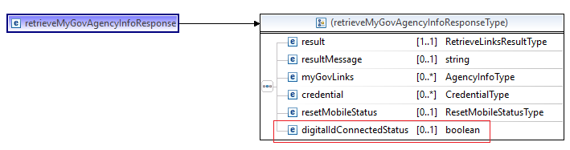
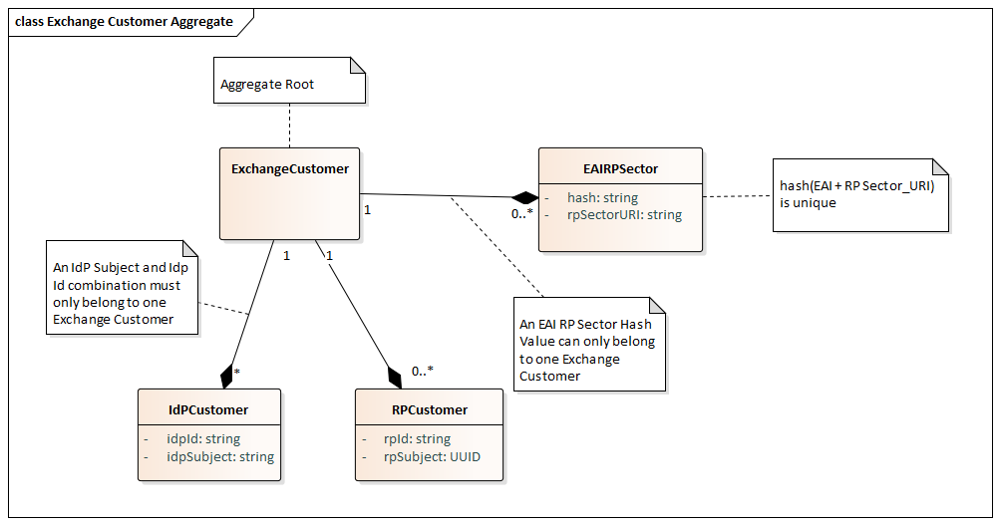
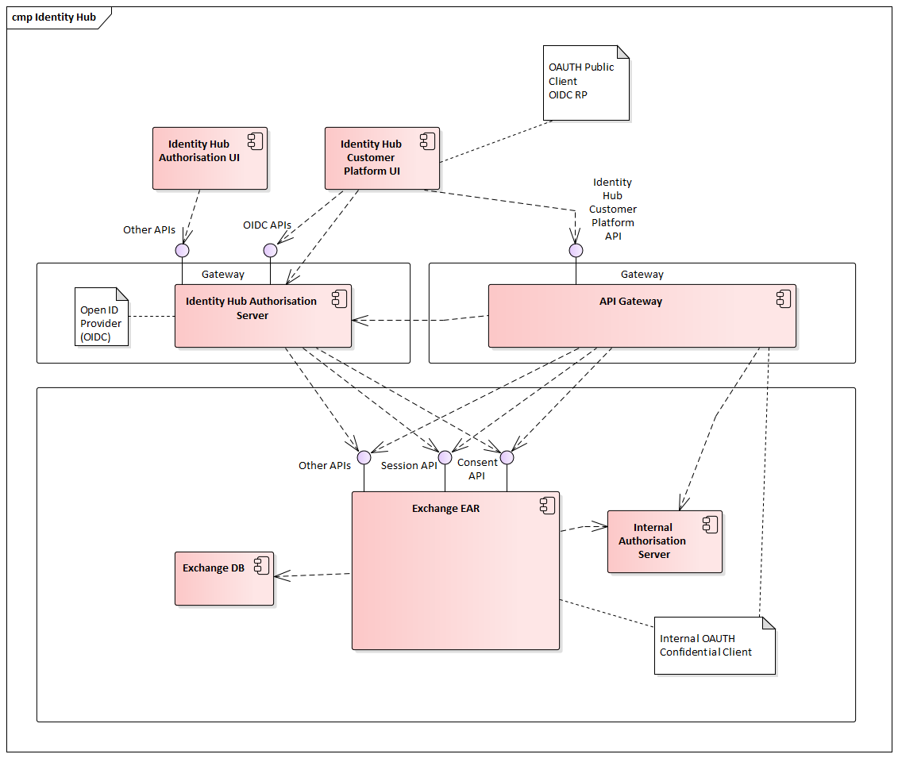
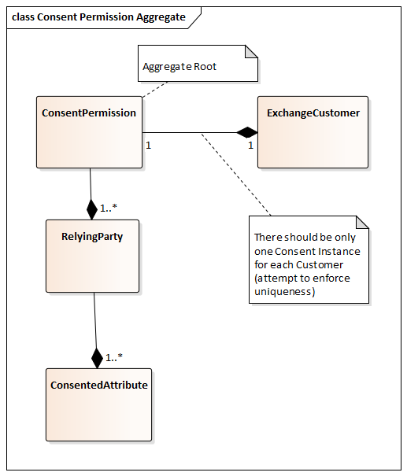

MaGIC Train PI Design 0.1.3
This artifact will include the design (or references to documentation) for those features which require solution architecture involvement.
History
| Author | Date | Version | Description |
|---|---|---|---|
| LP | 17/09/2019 | 0.1.0 | Created |
| RC | 18/10/2019 | 0.1.1 | Updated - PI 6 Features |
| MD | 16/01/2020 | 0.1.2 | Updated - Added PI7 Features |
| RC | 23/01/2020 | 0.1.3 | Updated - Moved to different folders and files |
PI6 Features
The PI-6 will incorporate the following features:
| Feature # | Feature Description | Design Required | MDT | Comments |
|---|---|---|---|---|
| MAP-9 | myGov On Boarding Environment | No | Magical Staff | NONE |
| MAP-13 | Connection of Digital Identity to myGov Account via myGov | Yes | Dragons, Magical Staff | |
| MAP-15 | myAged Care move to DoH | No | Magical Staff | Carried forward from PI-5 (scheduled for Nov 23rd release) |
| MAP-16 | Complete Abandoned myGov Integration Flow | Yes | Dragons, Magical Staff | Sequence diagrams have been attached to the respective user stories in JIRA MI-181, MI-182, MI-183 |
| MAP-17 | myGov Access App Enhancements | No | Magical Staff | NONE |
| MAP-20 | Identity Resolution in the Ecosystem | Yes | Mushrooms | NONE |
| MAP-22 | Improve Error Handling experience in myGov Integration Flow | No | Dragons | NONE |
| MAP-34 | Department of Health: Bonded Programs On-boarding to myGov | No | Magical Staff | Inbox / NAC services are not in scope for the Nov 23rd release, however they might be in scope for the Feb 2020 release so we need to create and provide TEST/PROD .pfx certs accordingly |
| MAP-37 | ISAM DMZ Move | No | Magical Staff | NONE |
| MAP-40 | Turn on Inbox and Tell Us Once for VICSRO | No | Magical Staff | Carried forward from PI-5 (scheduled for Nov 23rd release) |
| MAP-43 | myGov Linking Tool links to Process Direct | Yes | Magical Staff | NONE |
| MAP-47 | Remove redundant logging to free up server space | No | Magical Staff | NONE |
| MAP-50 | Remove ConnectedID code | No | Magical Staff | NONE |
| MAP-51 | Log myGov user session attributes | No | Magical Staff | NONE |
| MAP-53 | Masking of Message ID header of emails sent from myGov | No | Magical Staff | NONE |
| MAP-54 | Exchange to forget user consent | Yes | Dragons | Stretch goal |
| MAP-62 | Provision Australia Post to the Exchange Production Environment | No | Mushrooms | NONE |
| MAP-65 | DHS AusKey Decommissioning | No | Magical Staff | NONE |
| MAP-67 | Extend logic in Exchange to evaluate assurance levels (acr_claim) | No | Dragons | NONE |
MAP 13 - Connection of Digital Identity to myGov Account via myGov
This feature enables the User to connect their myGov account to their Digital Identity from an authenticated myGov session, and also allow the user to sign-in to the myGov portal using their Digital Identity.
Appropriate validation will be performed in the myGov code to ensure that connection to Digital Identity MUST only occur if the assurance level meets the minimum requirement of IP2 + CL2.
Once the User successfully connects their myGov account to Digital Identity, the existing session in myGov is stepped-up from their myGov credential to Digital Identity credential upon the user returning to an authenticated myGov portal.
Four new DB tables (specified below) will be created by the myGov Developers as part of this feature to ensure that the User’s Digital Identity information is stored in separate DB tables.
- MGV_PROF_DIGITAL_IDENTITY - This table stores profile information for an associated digital identity.
- MGV_PROF_DIGITAL_IDENTITY_HIST – History of digital identity profile entries – similar to profile history table.
- MGV_BANNER_REF - This table stores information pertaining to types of banners and properties associated.
- MGV_BANNER – This table stores user interaction with banner types.
For Feb 2020 release (MVP), we need to ensure that even though a User has already connected their myGov account to their Digital Identity, their existing myGov Profile information MUST be used for the Tell-Us-Once and Linking services, NOT their Digital Identity profile details.
The following schema change is required to the existing RetrieveMyGovAgencyInfo service to add an optional Boolean attribute to determine the User’s Digital Identity connected status. The value of this attribute will be used to determine from which table the User’s profile information should be retrieved to be displayed on the User’s myGov home page. If the Boolean is set to True then the profile information should be retrieved from the new MGV_PROF_DIGITAL_IDENTITY table, OR ELSE the existing myGov User Profile table.
Click here to view the diagram at full size.
{kind=link}
Click here for the modified Schema file in the SOAPE SVN Repository.

MAP 16 - Complete Abandoned myGov Integration Flow
This feature allows a user, who had previously commenced the process of linking their digital identity to myGov and not completed to be able to return and complete the process.
No SSO (myGov account not connected to Digital Identity) JIRA MI-181
No SSO (myGov account connected to Digital Identity) JIRA MI-182
Active SSO session (mygov_linked claim) JIRA MI-183
- Scenario 1: (Existing myGov - No Exchange - SSO available) Click here to view the diagram at full size or get the PDF here
- Scenario 2: (No myGov - No Exchange - SSO available) Click here to view the diagram at full size or get the PDF here
- Scenario 3: (Existing myGov - Connected to Exchange - SSO available) Click here to view the diagram at full size or get the PDF here
{kind=link}
{kind=link}
{kind=link}
{kind=link}
{kind=link}
{kind=link}
The myGov OpenAPI spec which includes the below changes required as part of this feature has been documented here
(a) modified /v1/authenticator/verify to return the Customer's email address or link identifier (MBUN) for the given qualified subject attribute.
(b) defined a new version (v2) for /accounts/links as part of an orchestration API for creating OR updating the Customer's myGov profile in myGov along with creation of a new myGov RP Account Link for a given relying party.
MAP 20 - Identity Resolution
This diagram depicts the relationships present within the Exchange Customer Aggregate Root.
Click here to view the diagram at full size.
{kind=link}

Sequence diagrams:
- Scenario 1: (New Customer - New RP - New IDP - New myGov) Click here to view the diagram at full size or get the PDF here
- Scenario 2: (Existing Customer - New RP - New IDP - Existing myGov) Click here to view the diagram at full size or get the PDF here
- Scenario 3: (Existing Customer - Existing RP - New IDP - Existing myGov) Click here to view the diagram at full size or get the PDF here
{kind=link}
{kind=link}
{kind=link}
MAP 43 - Agency Customer Link API
The JETT train feature 12.4 proposes to move the Confirmation of Identity guided procedure into Process Direct. In addition to this, the myGov Linking Tool will also be moved to Process Direct as Identity and Authentication transactions are seen as the same thing to Service Delivery staff.
MaGIC will enable the myGov linking tool to integrate with Process Direct, however no updates to the functionality of the myGov linking tool itself will be made.
myGov to expose the below 3 API's to Process Direct, which will be consumed via the SAP PI/PO Integration platform:
(a) Read Q&A set (retrieve PORO information and Eligibility rating stored against a Customer’s record)
(b) Calculate Registration Rating
(c) Generate Activation Code
The Agency Customer Link OpenAPI spec has been documented here.
The API documentation is located here.
An existing service ClientAgencyCustomerService.java is available which already includes a large part of the functionality required by the API. This should be extended to support the API.
A new (skinny) WAR artifact should be added to the portfolio-enterprise EAR project which exposes the agency-customer-link REST API.
MAP 54 - Manage Consent and IdP selection
- (+) denotes a new component. - (*) denotes an updated component.
Component Diagram
Click here to view the diagram at full size or get the PDF here.
{kind=link}

Identity Hub Authorisation Server (*)
Individuals will authenticate via the Identity Hub Auth Server in order to access the Identity Hub Customer Platform in order to manage their consent rules amongst other things.
The Identity Hub Customer Platform will be registered as Public OAUTH Client/RP with scopes identityhub_customer_platform_read and identityhub_customer_platform_write.
The Identity Hub Authorisation Servers MUST support the following OIDC and OAUTH2 standards-based functionality:
- Public OAUTH Clients
- This is required to support the Identity Hub Customer Platform (SPA) as a Public Client.
- Proof Key for Code Exchange PKCE
- This is required to support Single Page Applications (SPA) Public Clients.
- A well-Known configuration Endpoint /.well-known/openid-configuration (or equivalent URL).
- Public Clients MUST use the Authorisation Code flow in order to receive Access Tokens and ID Tokens.
- Front-Channel Logout described under OIDCFC.
- RP iframe for Session Management as described under OIDCSESS.
- Access Tokens as JWTs.
Authorisation Servers SHALL NOT support the following functionality:
- The Implicit flow MUST NOT be supported.
- Public Clients SHALL NOT receive Refresh Tokens.
Identity Hub Customer Platform (+)
Identity Hub customers will be able to manage their consent rules and instances via this platform which will hosted on a seperate (sub) domain which customers may find through external means like a Google search.
This component will be developed as an Angular single page application and registerd an OIDC Relying Party on the Identity Hub Authorisation Server. Please note that the rules that apply to TDIF RPs do not apply to this client although they are both registered as OIDC RPs.
Angular Components will be developed (or existing open source packages leveraged) to provide the following OIDC-related functionality:
- Proof Key for Code Exchange PCKE.
- Front-Channel Logout described under OIDCFC.
- RP iframe for Session Management as described under OIDCSESS.
API Gateway (+)
The API Gateway will host and protect external-facing REST APIs available to the Identity Hub Customer Platform. It must validate and unpack JWT Access Tokens (and relevant scopes) issued by the Identity Hub Authorisation Server and propagate the associated subject identifier to the downstream internal APIs.
Identity Hub Customer Platform API (+)
The API for this feature has been documented here.
Domain (*)
This diagram depicts the relationships present within the Consent Permission Aggregate Root.
Click here to view the diagram at full size.
{kind=link}

PI7 Features
The PI-7 will incorporate the following features:
| Feature # | Feature Description | Design Required | MDT | Comments |
|---|---|---|---|---|
| MAP-33 | On-board Medicare to mobile authentication pattern (MAP) | No | Mushrooms | NONE |
| MAP-72 | On-board National Cancer Screening Register to myGov | No | Mushrooms | NONE |
| MAP-178 | View my activities on user dashboard | No | Mushrooms | NONE |
| MAP-47 | Remove redundant logging to free up server space | No | Magical Staff | NONE |
| MAP-195 | Turn-Off Manage ABN Connections (MAC) from myGov | No | Magical Staff | NONE |
| MAP-203 | Move GSE and ITS into GITLAB | No | Magical Staff | NONE |
| MAP-180 | Display document information requested by the Relying Party | No | Dragons | NONE |
| MAP-181 | Enhancements to myGov beta sign-in page | No | Dragons | NONE |
| MAP-182 | myGov account management for an account that only has digital identity credentials | No | Magical Staff | NONE |
| MAP-204 | Disposal of expired member service messages in myGov inbox data store | Yes | Magical Staff | NONE |
| MAP-55 | Manage IdPs enrolled in private beta from IdPs enrolled in public beta | Yes | Mushrooms | NONE |
| MAP-210 | Expose myGov Inbox API to support the digital experience platform dashboard | Yes | Magical Staff | NONE |
| MAP-211 | Expose myGov Tell us Once API to support the digital experience platform dashboard | Yes | Magical Staff | NONE |
| MAP-198 | Enhancements to myGov Integration architecture design | Yes | Dragons | NONE |
MAP 204 - Disposal of expired member service messages in myGov inbox data store
With the number of member services onboarding to Inbox function increases from time to time, the number of inbox messages in myGov Database grows rapidly. It is noted that a very large number of the inbox messages in the myGov data store are 'Expired', which has implications on storage and stability issues resulting in poor performance in myGov.
Proposed solution:
- Remove/Delete all expired metadata from the myGov Inbox DB table MGV_COMM. However prior to deletion, check for any dependencies on this table: if they do exist, the cascade delete option should be considered after exhaustive review & impact analysis.
- As part of the MVP, manually execute the SQL DELETE command to remove expired metadata from this table (and dependent tables if any).
- It is recommended to delete the expired data in small SQL batches rather than a one-off DELETE, to ensure there is no adverse impact on the DB.
- Post MVP, need to work towards defining and implementing a daily batch job to automate this process.
Relevant Member services must be informed that the expired metadata, once deleted from the myGov DB, can be no longer recovered.
MAP 55 - Manage IdPs enrolled in private beta from IdPs enrolled in public beta
The functionality required for this feature will enable the Exchange to determine the type of enrolment a Relying Party or Identity Provider is provisioned in the Exchange (i.e. private or public enrolment). As a result, the Exchange shall prompt users the list of accredited Identity Providers supported in that enrolment. For example if a user is participating in a public beta for a Relying Party, the Exchange would only want to display Identity Providers that are also in Public beta or that are Live.
Proposed solution:
- Extend the configuration of Relying Party registration details in the Exchange so that it includes an enrolment phase. This includes 'Private beta', 'Public beta' and 'Live' phases.
- Extend the configuration of Identity Provider registration details in the Exchange so that it includes an enrolment phase. This includes 'Private beta' and 'Public beta' phases.
- Update registered RP and IdP details in all environments from Dev to Production to include the enrolment phase.
- Evaluate and display accredited Identity Providers that support an authentication request from a public beta RP.
- Evaluate and display accredited Identity Providers that support an authentication request from a private beta RP.
The connected Relying Parties, Identity Providers and Attribute Providers should be classified as follows:
| Relying Party details | Classification |
|---|---|
| ATO Online (TFN) | private |
| ATO RAM | private |
| DSS Grants | private |
| USI | public |
| myGov | private |
| Centrelink | private |
| DHS PRODA | public |
| Identity Provider details | |
| myGovID | public |
| DigitalID | private |
| myGov | ?? |
| Attribute Provider details | |
| RAM | private |
MAP 210 - Expose myGov Inbox API to support the digital experience platform dashboard
Currently, Services Australia is in the process of developing a digital experience platform (DxP) that will deliver a proof of concept for a beta at some stage in 2020.
The DxP will utilise some of myGov capabilities and will require MaGIC to develop APIs for the Inbox so that the technical enabling team for the DxP can consume them and commence testing for their beta.
The External myGov Digital Mail OpenAPI spec is located here.
The API documentation is located here.
MAP 211 - Expose myGov Tell us Once API to support the digital experience platform dashboard
Currently, Services Australia is in the process of developing a digital experience platform (DxP) that will deliver a proof of concept for a beta at some stage in 2020.
The DxP will utilise some of myGov capabilities and will require MaGIC to develop APIs for the Tell Us Once functionality so that the technical enabling team for the DxP can consume them and commence testing for their beta.
The External myGov Tell Us Once OpenAPI spec is located here.
The API documentation is located here.
MAP 198 - Enhancements to myGov Integration architecture design
The current design for myGov integration does not adequately account for de-duplication and utilises the myGov MBUN as that user’s pairwise identifier for linking the relying party with the exchange. This also does not account for situations where an account is already made and a link is subsequently established.
Proposed solution:
- mygov_link_id - The mygov_linked claim should be replaced with a 'mygov_link_id' claim, which will return the mygov_link_id for that user’s link between myGov and the relying party requesting the authentication. It can be requested as part of the "claims" request parameter in the Authorization Request. This claim should not initiate any user flows at the Exchange.
- mygov_link - Introduce an additional value called 'mygov_link' for the User flow URL parameter, which may be requested by a Relying Party when it expects the user to undergo myGov integration. This value need not be passed to the IdP. A Relying Party may request multiple values for this URL Parameter. The 'user_flow' request parameter will hold values that indicate the desired user flow for the user at the Identity Provider and/or the Exchange. Defined values are: sign_in, sign_up, mygov_link.
PI8 Features
The PI-8 will incorporate the following features:
| Feature # | Feature Description | Design Required | MDT | Comments |
|---|---|---|---|---|
| MAP-50 | Removal of the 'connectedID' code from myGov | No | Magical Staff | NONE |
| MAP-193 | Restrict the ability to request verified documents to specific document types | No | Dragons | NONE |
| MAP-199 | Educational information for identity.gov.au | No | Mushrooms | NONE |
| MAP-202 | User Dashboard authenticated landing page | No | Mushrooms | NONE |
| MAP-218 | On-board the DTA mock Relying Party to onboarding environment | No | Mushrooms | NONE |
| MAP-222 | On-board the NDIS app to myGov MAP and enable tell us once capabilities | No | Mushrooms | NONE |
| MAP-220 | Updated Error message for de-duplication | No | Dragons | NONE |
| MAP-166 | Ability for a user to unlink a digital identity from their myGov account | No | Magical Staff | NONE |
| MAP-221 | Update URLs on myGov/Identity Hub that redirect from Human Services to Services Australia | No | Magical Staff and Mushrooms | NONE |
| MAP-42 | Connect digital identity to myGov via an authenticated member service session | Yes | Dragons | NONE |
| MAP-155 | Broadcast capability for myGov unauthenticated pages | Yes | Magical Staff | NONE |
| MAP-184 | Enhance mobile authentication pattern to accept digital identity | Yes | Magical Staff | NONE |
| MAP-185 | Enhance web authentication pattern to accept digital identity | Yes | Magical Staff | NONE |
| MAP-223 | Archiving inactive myGov accounts | Yes | Magical Staff | NONE |
MAP 42 - Connect digital identity to myGov via an authenticated member service session
A link to the design paper needs to be pasted here once reviewed and approved by GPAG
MAP 155 - Broadcast capability for myGov unauthenticated pages
This feature is to implement a broadcast capability for the myGov unauthenticated sign in page. Users would be informed of any outages to member services or upcoming changes without the requirement to sign in to myGov to receive that information.
Support staff members in the Channel Operations Facility (COF) create/submit these incident messages via the GovCMS Portal to be published on the myGov website. This is an existing process and will remain unchanged.
The current design proposal is that the myGov Landing JSP Page in the Unauthenticated space should directly initiate an API call (via the User Agent/Browser) to the 'Alert:List:Active' resource API, exposed by the GovCMS system (that sits behind an Akamai CDN cache) to retrieve a list of all active alerts that must be published on the myGov website.
Click here to view the component diagram at full size.
{kind=link}
Reference to the API specification is here.
MAP 184 - Enhance mobile authentication pattern to accept digital identity
Embed a link to the design paper once reviewed and approved by GPAG
MAP 185 - Enhance web authentication pattern to accept digital identity
Embed a link to the design paper once reviewed and approved by GPAG
MAP 223 - Archiving inactive myGov accounts
The detailed design strategy for archiving inactive myGov accounts must be documented here.
References
| Reference | Description |
|---|---|
| [JWK] | JSON Web Key (JWK): https://tools.ietf.org/html/rfc7517 |
| [JWT] | JSON Web Token (JWT): https://tools.ietf.org/html/draft-ietf-oauth-json-web-token-32 |
| [OAUTH2] | The OAuth 2.0 Authorization Framework: https://tools.ietf.org/html/rfc6749 |
| [OIDC] | OpenID Connect Core 1.0 incorporating errata set 1: http://openid.net/specs/openid-connect-core-1_0.html |
| [OAUTHBBAPPS] | OAuth 2.0 for Browser-Based Apps https://tools.ietf.org/id/draft-parecki-oauth-browser-based-apps-02.txt |
| [OIDCFC] | OpenID Connect Front-Channel Logout 1.0 https://openid.net/specs/openid-connect-frontchannel-1_0.html |
| [OIDCSESS] | OpenID Connect Session Management 1.0 https://openid.net/specs/openid-connect-session-1_0.html |
| [PKCE] | Proof Key for Code Exchange by OAuth Public Clients: https://tools.ietf.org/html/rfc7636 |